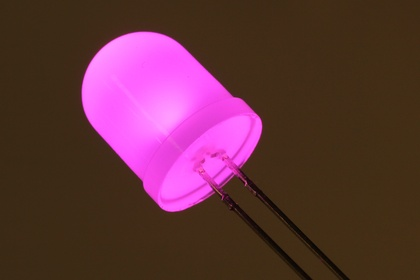
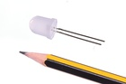

10 mm Frosted Pink LED - L10P

Summary
Name: 10 mm Frosted Pink LED
ID: LEDS-10-P-FROS-01
Hex ID: L10P
WebPage: https://github.com/oomlout/oomlout-OOMP/wiki/LEDS-10-P-FROS-01
Short URL: http://oom.lt/L10P
Revision History: https://github.com/oomlout/oomlout-OOMP/blob/master/parts/LEDS-10-P-FROS-01/
| Type |
Size |
Color |
Description |
Index |
LEDS
LED |
10
10 mm |
P
Pink |
FROS
Frosted |
01
|
Images

About
This part is awaiting a description.
Specifications
| Info |
Value |
| Type |
LED |
| Size |
10 mm |
| Color |
Pink |
| Description |
Frosted |
| Pitch |
2.54 mm |
| Lens Color |
Frosted |
| Forward Voltage |
3.2 V |
| Forward Current |
15 mA |
| Intensity |
500 mcd |
| Power Angle |
50 deg |
| Chromaticity X |
0.34 |
| Chromaticity Y |
0.17 |
Extra Details
Spotted a mistake, want to add more? Let us know oomp@oomlout.com
All images and resources are licensed [CC BY-SA] unless otherwise stated (ie. the datasheets)